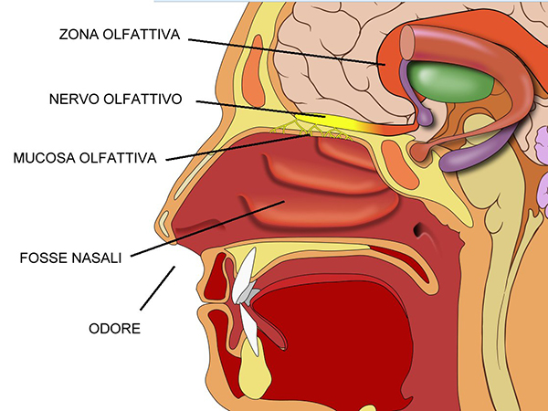

| |
L'OLFATTO
Tra i cinque sensi, l'olfatto occupa un posto speciale per la sua capacità di collegarci a ricordi,
emozioni e luoghi. Il semplice aroma di un fiore, di un cibo o persino di una giornata di pioggia può
evocare sensazioni profonde, trasportandoci in momenti specifici della nostra vita. Questo senso, spesso sottovalutato,
svolge un ruolo fondamentale non solo nella percezione dell'ambiente, ma anche nel nostro benessere fisico e mentale.
COME FUNZIONA L'OLFATTO?
L'olfatto è un processo complesso che inizia nella cavità nasale, dove le molecole odorose vengono catturate
durante l'inspirazione. Queste molecole si legano ai recettori olfattivi, situati in una piccola area chiamata
epitelio olfattivo. Ogni recettore è specializzato per riconoscere molecole specifiche, e quando questo accade,
invia segnali al bulbo olfattivo, una struttura alla base del cervello. Qui le informazioni vengono elaborate
e inviate al sistema limbico e alla corteccia olfattiva, responsabili delle emozioni e dell'elaborazione degli odori.
Connessione con le emozioni
Un aspetto unico dell'olfatto è il suo legame diretto con il sistema limbico, la parte del cervello che gestisce
emozioni e ricordi. Questo spiega perché un profumo familiare può evocare immagini vivide o risvegliare emozioni intense.
Nessun altro senso ha un collegamento così diretto con le nostre emozioni.
CURIOSITÀ SULL'OLFATTO
L'olfatto umano è incredibilmente potente e sorprendente. Ecco alcune curiosità che forse non conoscevi:
- Gli esseri umani possono riconoscere circa 10.000 odori diversi, ma alcune ricerche suggeriscono che il numero potrebbe essere molto più alto.
- Il naso può rilevare molecole odorose in concentrazioni di appena 1 parte per miliardo.
- L'olfatto è il primo senso a svilupparsi durante la vita fetale.
- Durante il sonno, l'olfatto continua a funzionare, anche se in modo meno sensibile rispetto alla veglia.
PROBLEMI LEGATI ALL'OLFATTO
Come ogni senso, anche l'olfatto può subire alterazioni. Tra i problemi più comuni troviamo:
- Anosmia: La perdita totale o parziale dell'olfatto, spesso causata da infezioni, traumi cranici o invecchiamento.
- Parosmia: Una distorsione nella percezione degli odori, che può rendere sgradevoli profumi normalmente piacevoli.
- Iposmia: Una riduzione della sensibilità olfattiva, che può essere temporanea o cronica.
COME PROTEGGERE L'OLFATTO
Proteggere il senso dell'olfatto è essenziale per mantenerlo in salute. Alcuni consigli utili includono:
- Evita l'esposizione a sostanze chimiche irritanti, come fumi o solventi.
- Mantieni una buona igiene nasale con lavaggi salini regolari.
- Smetti di fumare, poiché il fumo danneggia i recettori olfattivi e riduce la sensibilità del naso.
- Consulta un medico in caso di problemi persistenti, come perdita dell'olfatto o alterazioni significative nella percezione degli odori.
|
 |
Famiglie di Odori
| Famiglia di Odori |
Esempi |
Descrizione |
| Floreale |
Rosa, gelsomino, lavanda |
Odori delicati e dolci, associati ai fiori. |
| Agrumato |
Limone, arancia, bergamotto |
Freschi e vivaci, evocano energia e pulizia. |
| Speziato |
Cannella, chiodi di garofano |
Intensamente aromatici, spesso caldi e stimolanti. |
| Legnoso |
Sandalo, cedro, pino |
Caldi e terrosi, spesso usati nei profumi maschili. |
| Animale |
Muschio, ambra |
Ricchi e profondi, usati in fragranze per intensità. |
| Dolce |
Vaniglia, miele, zucchero |
Golosi e invitanti, legati a sapori comfort. |
|
Le Funzioni dell'Olfatto
| Funzione |
Descrizione |
Esempi Pratici |
| Percezione del Pericolo |
Identifica odori nocivi o pericolosi. |
Gas, cibo avariato, fumo. |
| Memoria e Emozioni |
Collega gli odori a ricordi ed emozioni profonde. |
Profumo di un familiare o odori legati all'infanzia. |
| Appetito e Nutrizione |
Stimola l'appetito percependo odori gradevoli. |
Odore di pane fresco o cibi cucinati. |
| Comunicazione Sociale |
Influenza attrazione e relazioni attraverso segnali chimici naturali (feromoni). |
Attrazione romantica, empatia. |
| Benessere |
Odori gradevoli possono rilassare o stimolare, migliorando lo stato emotivo. |
Aromaterapia con oli essenziali. |
|